Вашему вниманию представляется
С виду эта девочка выглядит как одуванчик, но не спешите ей доверять. На самом деле это маленькая зараза, которая любит вредничать, кушать, спать и, самое главное, поиграть в игры.
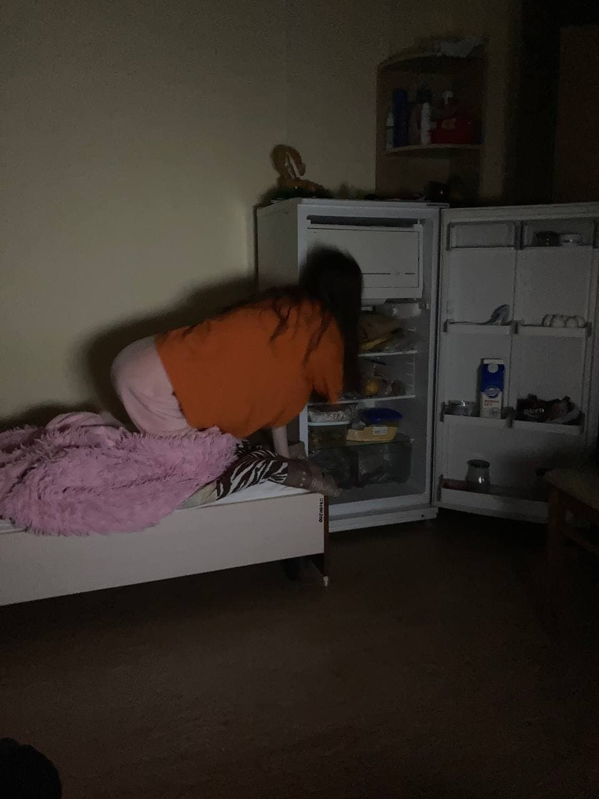
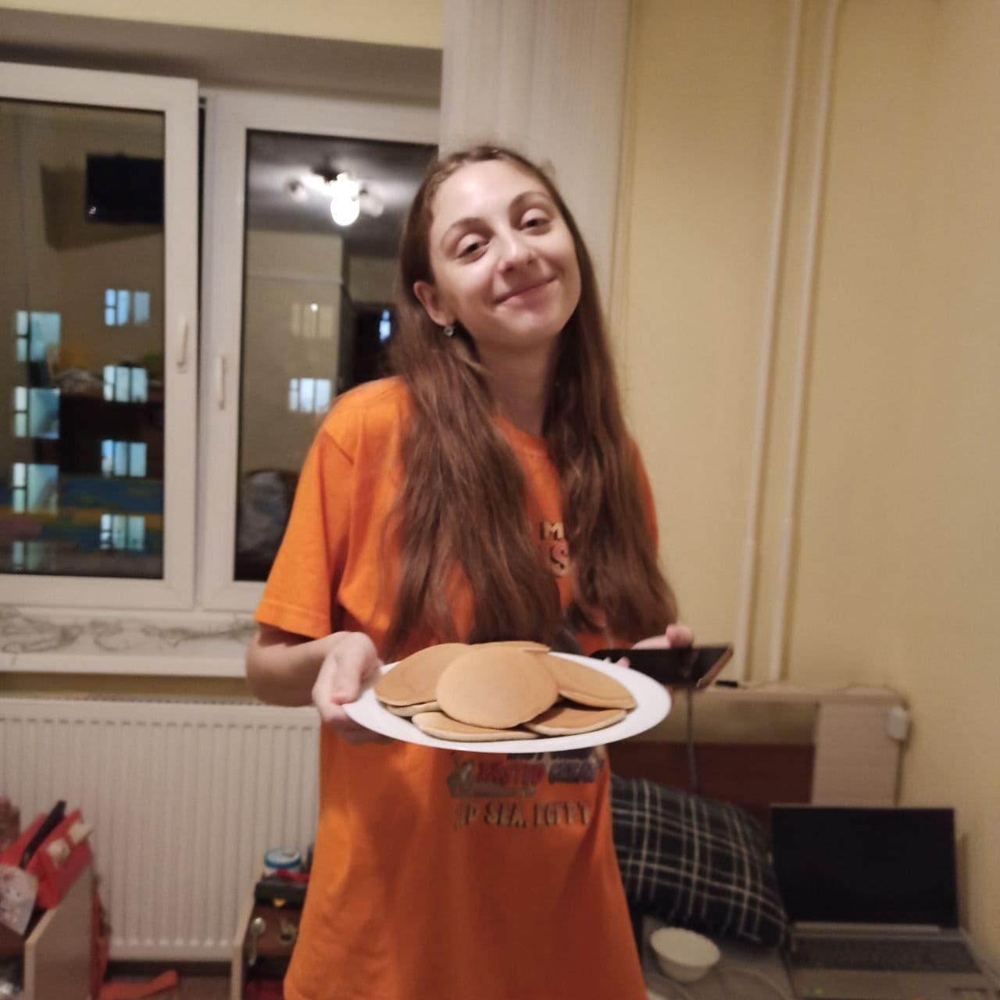
А на этих фото представлен довольный троглодит в естественной среде обитания, который занимается любимым делом - кушает в 11 часов вечера. Не важно, какое время суток, кушать кошется всегда!
Ж изнь с Екатериной Сергеевной - это один сплойшной анекдот
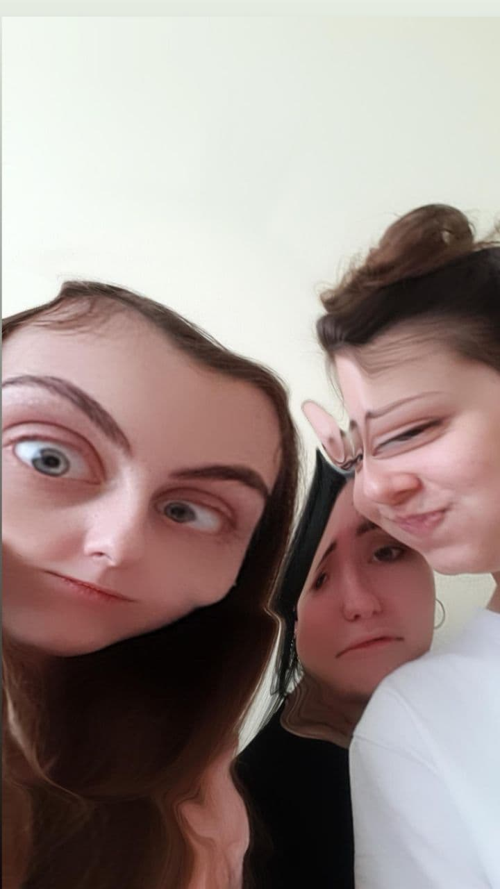
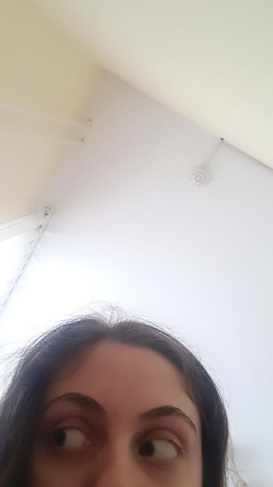
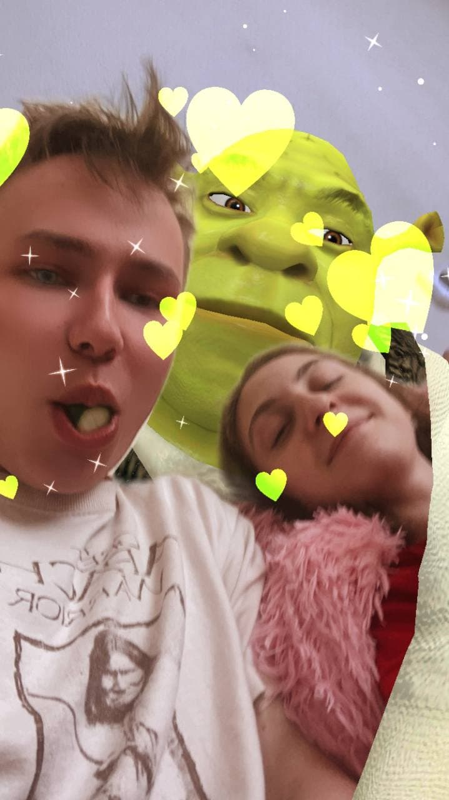
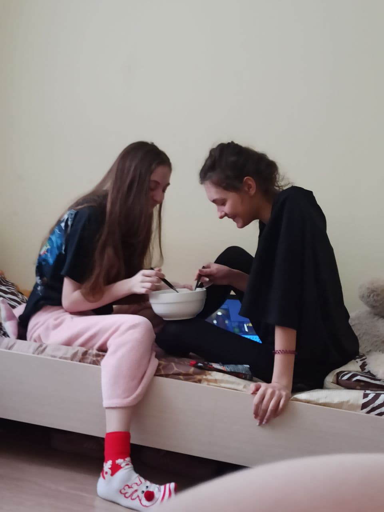
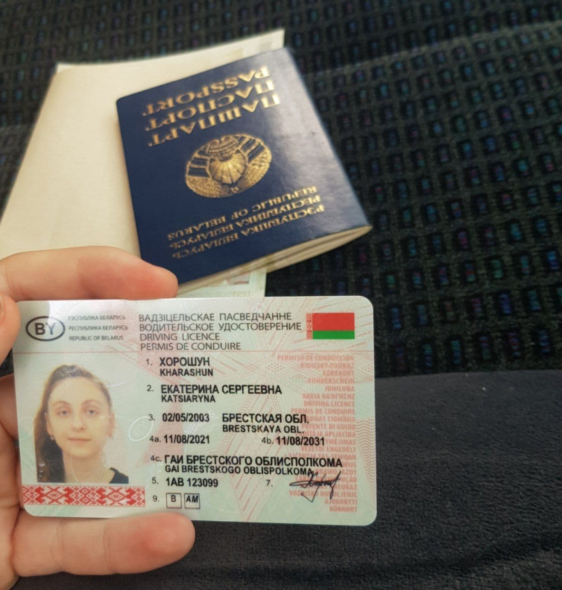
Получила права
Минус по вышке
И танцует довольная
Хотите знать как этот чёртик выглядел в молодости?
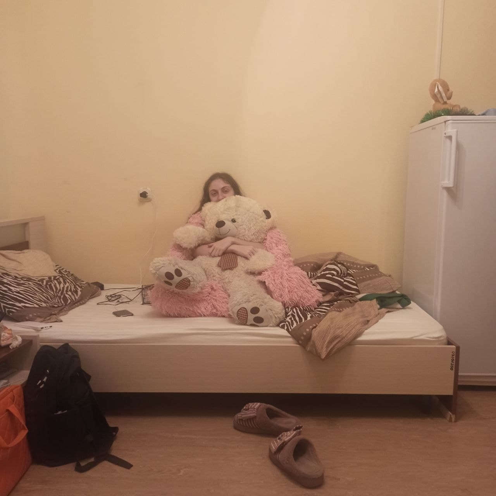
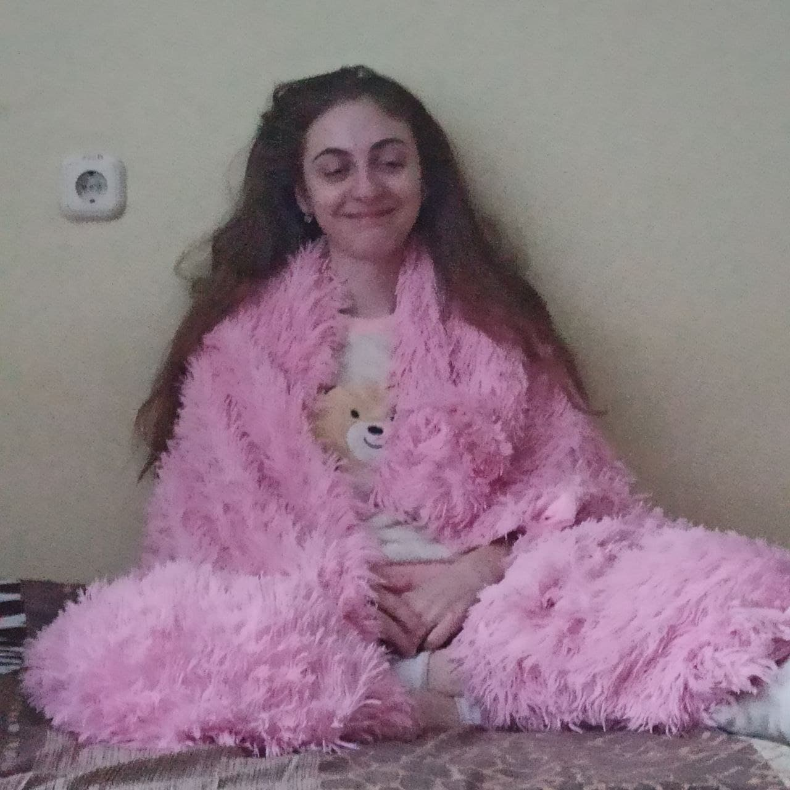
| А | вот так |
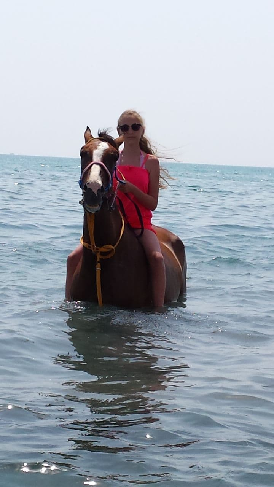
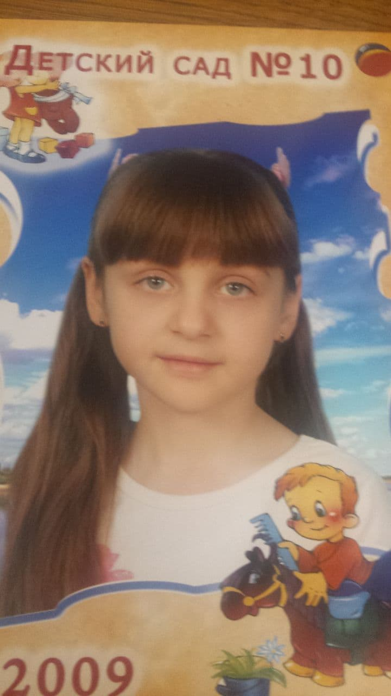